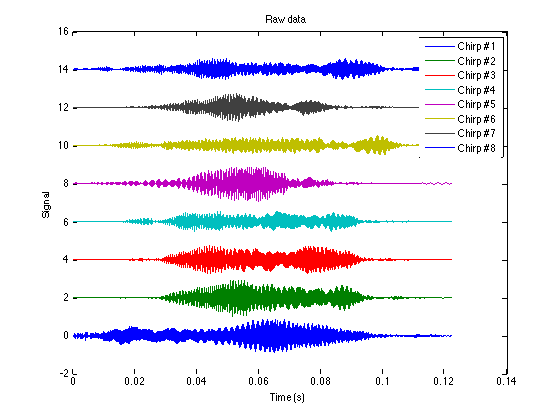
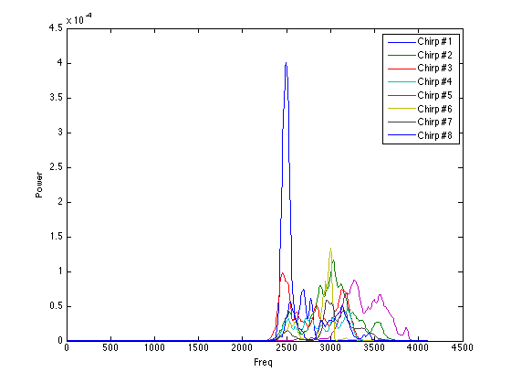
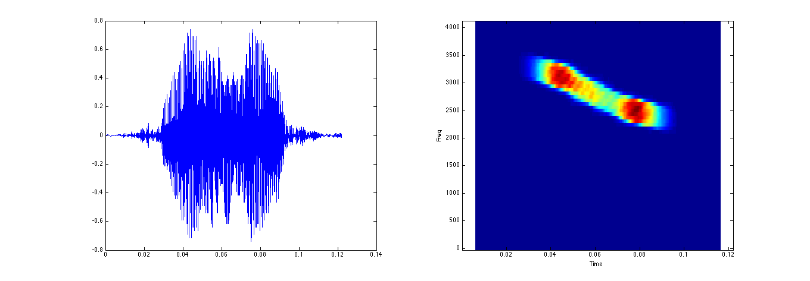
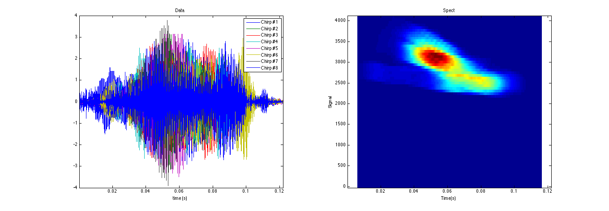
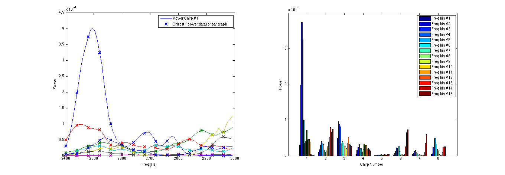
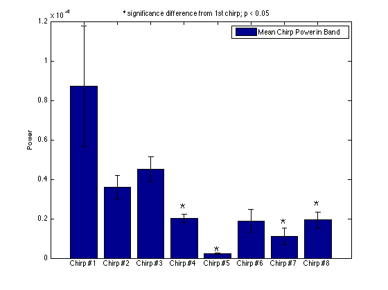

Plotting 2D Data - Bird Chirp Example
Explores the spectral properties of a 2D matrix making use of several commands from the plotting package. The philosophy of this package is rapid prototyping and exploration - most of the plots you see below can be produced with one or two commands.
Contents
- Load a bunch of signals (bird chirps)
- plott_matrix3D: Plot the stacked raw data
- plott_psd: Plot all powerspectra
- plott_ani: Animated plot time series paired with spectrogram for each chirp
- plott_all: Mean spectrogram of all data
- Set up data for plotting statistics
- Plot differences in power across chirps
- bar_matrix3D: Plot difference across chirps
Load a bunch of signals (bird chirps)
set(0, 'DefaultFigureColor', 'White'); load chirp Ndata = 1000; Nchirps = 8; chirp_midpoints = [620, 2200, 3800, 5200, 6800, 8300, 10100, 11900]; chirp_midpoints = chirp_midpoints(1:Nchirps); chirp_coords = repmat(chirp_midpoints,Ndata,1) + repmat([1:Ndata]' - floor(Ndata/2) - 1,1,Nchirps); X = y(chirp_coords); chirpnames = arrayfun(@(x) ['Chirp #' num2str(x)],1:Nchirps,'UniformOutput',0);
plott_matrix3D: Plot the stacked raw data
figure; hl= plott_matrix3D(X,'fs',Fs,'do_mean',1,'showErrorbars',1,'do_shift',2,'active_dim',3); title('Raw data'); legend(hl,chirpnames); xlabel('Time (s)'); ylabel('Signal');
plott_psd: Plot all powerspectra
figure; hl= plott_psd(X,'fs',Fs); ylabel('Power'); legend(hl,chirpnames);
plott_ani: Animated plot time series paired with spectrogram for each chirp
figl; plott_ani(X(:,:),'fs',Fs,'fname',{@plott_fs,@plott_spect});
plott_all: Mean spectrogram of all data
figl; [h, hl] = plott_all(X,'fs',Fs,'psd_on',0); legend(hl{1},chirpnames); ylabel('Signal');
Set up data for plotting statistics
Calculate all spectra
[P, f] = psd_wrapper(X,'fs',Fs); % Take segment of data from 2300-4000Hz. index = find(f >= 2400 & f < 3000); Y = P(index,:); f2 = f(index);
Plot differences in power across chirps
Only keep every 5th datapoint to ensure data is independent
figl; subplot(1,2,1); hl1 = plot(f2,Y); Ysparse = Y(1:5:end,:); f_sparse = f2(1:5:end); hold on; hl2 = plot(f_sparse,Ysparse,'x','MarkerSize',10,'LineWidth',2); legend([hl1(1) hl2(1)],'Power Chirp #1','Chirp #1 power data for bar graph'); xlabel('Freq (Hz)'); ylabel('Power'); subplot(1,2,2); hl = bar(Ysparse'); xlabel('Chirp Number'); % freqbinnames = ; legend(hl,arrayfun(@(x) ['Freq bin #' num2str(x)], 1:size(Ysparse,1),'UniformOutput',0) ); ylabel('Power');
bar_matrix3D: Plot difference across chirps
figure; [hl] = bar_matrix3D(Ysparse); set(gca,'XTickLabel',chirpnames); legend('Mean Chirp Power in Band'); title('* significance difference from 1st chirp; p < 0.05'); ylabel('Power');